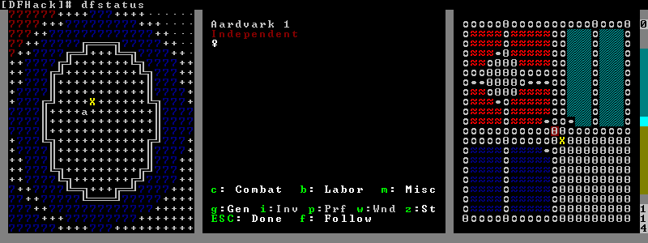
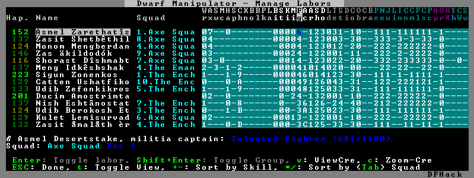

DFHack Plugins¶
DFHack plugins are the commands, that are compiled with a specific version. They can provide anything from a small keybinding, to a complete overhaul of game subsystems or the entire renderer.
Most commands offered by plugins are listed here, hopefully organised in a way you will find useful.
Contents
Data inspection and visualizers¶
stonesense¶
An isometric visualizer that runs in a second window. Usage:
- stonesense
Open the visualiser in a new window. Alias
ssense.- ssense overlay
Overlay DF window, replacing the map area.
For more information, see the full Stonesense README.
blueprint¶
Exports a portion of your fortress into QuickFort style blueprint files.
Usage:
blueprint <x> <y> <z> <name> [dig] [build] [place] [query]
Options (If only region and name are given, export all):
- x,y,z
Size of map area to export
- name
Name of export files
- dig
Export dig commands to “<name>-dig.csv”
- build
Export build commands to “<name>-build.csv”
- place
Export stockpile commands to “<name>-place.csv”
- query
Export query commands to “<name>-query.csv”
Goes very well with quickfort, for re-importing.
remotefortressreader¶
An in-development plugin for realtime fortress visualisation. See Armok Vision.
isoworldremote¶
A plugin that implements a remote API used by Isoworld.
cursecheck¶
Checks a single map tile or the whole map/world for cursed creatures (ghosts, vampires, necromancers, werebeasts, zombies).
With an active in-game cursor only the selected tile will be observed. Without a cursor the whole map will be checked.
By default cursed creatures will be only counted in case you just want to find out if you have any of them running around in your fort. Dead and passive creatures (ghosts who were put to rest, killed vampires, …) are ignored. Undead skeletons, corpses, bodyparts and the like are all thrown into the curse category “zombie”. Anonymous zombies and resurrected body parts will show as “unnamed creature”.
Options:
- detail
Print full name, date of birth, date of curse and some status info (some vampires might use fake identities in-game, though).
- nick
Set the type of curse as nickname (does not always show up in-game, some vamps don’t like nicknames).
- all
Include dead and passive cursed creatures (can result in a quite long list after having FUN with necromancers).
- verbose
Print all curse tags (if you really want to know it all).
Examples:
cursecheck detail allGive detailed info about all cursed creatures including deceased ones (no in-game cursor).
cursecheck nickGive a nickname all living/active cursed creatures on the map(no in-game cursor).
Note
If you do a full search (with the option “all”) former ghosts will show up with the cursetype “unknown” because their ghostly flag is not set.
Please report any living/active creatures with cursetype “unknown” - this is most likely with mods which introduce new types of curses.
flows¶
A tool for checking how many tiles contain flowing liquids. If you suspect that your magma sea leaks into HFS, you can use this tool to be sure without revealing the map.
probe¶
This plugin provides multiple commands that print low-level properties of the selected objects.
probe: prints some properties of the tile selected with k. Some of these properties can be passed into tiletypes.cprobe: prints some properties of the unit selected with v, as well as the IDs of any worn items. gui/gm-unit and gui/gm-editor are more complete in-game alternatives.bprobe: prints some properties of the building selected with q or t. gui/gm-editor is a more complete in-game alternative.
prospect¶
Prints a big list of all the present minerals and plants. By default, only the visible part of the map is scanned.
Options:
- all
Scan the whole map, as if it was revealed.
- value
Show material value in the output. Most useful for gems.
- hell
Show the Z range of HFS tubes. Implies ‘all’.
If prospect is called during the embark selection screen, it displays an estimate of layer stone availability.
Note
The results of pre-embark prospect are an estimate, and can at best be expected to be somewhere within +/- 30% of the true amount; sometimes it does a lot worse. Especially, it is not clear how to precisely compute how many soil layers there will be in a given embark tile, so it can report a whole extra layer, or omit one that is actually present.
Options:
- all
Also estimate vein mineral amounts.
reveal¶
This reveals the map. By default, HFS will remain hidden so that the demons
don’t spawn. You can use reveal hell to reveal everything. With hell revealed,
you won’t be able to unpause until you hide the map again. If you really want
to unpause with hell revealed, use reveal demons.
Reveal also works in adventure mode, but any of its effects are negated once
you move. When you use it this way, you don’t need to run unreveal.
Usage and related commands:
- reveal
Reveal the whole map, except for HFS to avoid demons spawning
- reveal hell
Also show hell, but requires
unrevealbefore unpausing- reveal demon
Reveals everything and allows unpausing - good luck!
- unreveal
Reverts the effects of
reveal- revtoggle
Switches between
revealandunreveal- revflood
Hide everything, then reveal tiles with a path to the cursor. Note that tiles behind constructed walls are also revealed as a workaround for Bug 1871.
- revforget
Discard info about what was visible before revealing the map. Only useful where (e.g.) you abandoned with the fort revealed and no longer want the data.
Bugfixes¶
fix-unit-occupancy¶
This plugin fixes issues with unit occupancy, notably phantom “unit blocking tile” messages (Bug 3499). It can be run manually, or periodically when enabled with the built-in enable/disable commands:
- (no argument)
Run the plugin once immediately, for the whole map.
- -h, here, cursor
Run immediately, only operate on the tile at the cursor
- -n, dry, dry-run
Run immediately, do not write changes to map
- interval <X>
Run the plugin every
Xticks (when enabled). The default is 1200 ticks, or 1 day. Ticks are only counted when the game is unpaused.
fixveins¶
Removes invalid references to mineral inclusions and restores missing ones. Use this if you broke your embark with tools like tiletypes, or if you accidentally placed a construction on top of a valuable mineral floor.
petcapRemover¶
Allows you to remove or raise the pet population cap. In vanilla
DF, pets will not reproduce unless the population is below 50 and the number of
children of that species is below a certain percentage. This plugin allows
removing the second restriction and removing or raising the first. Pets still
require PET or PET_EXOTIC tags in order to reproduce. Type help petcapRemover
for exact usage. In order to make population more stable and avoid sudden
population booms as you go below the raised population cap, this plugin counts
pregnancies toward the new population cap. It can still go over, but only in the
case of multiple births.
Usage:
- petcapRemover
cause pregnancies now and schedule the next check
- petcapRemover every n
set how often in ticks the plugin checks for possible pregnancies
- petcapRemover cap n
set the new cap to n. if n = 0, no cap
- petcapRemover pregtime n
sets the pregnancy duration to n ticks. natural pregnancies are 300000 ticks for the current race and 200000 for everyone else
tweak¶
Contains various tweaks for minor bugs.
One-shot subcommands:
- clear-missing
Remove the missing status from the selected unit. This allows engraving slabs for ghostly, but not yet found, creatures.
- clear-ghostly
Remove the ghostly status from the selected unit and mark it as dead. This allows getting rid of bugged ghosts which do not show up in the engraving slab menu at all, even after using clear-missing. It works, but is potentially very dangerous - so use with care. Probably (almost certainly) it does not have the same effects like a proper burial. You’ve been warned.
- fixmigrant
Remove the resident/merchant flag from the selected unit. Intended to fix bugged migrants/traders who stay at the map edge and don’t enter your fort. Only works for dwarves (or generally the player’s race in modded games). Do NOT abuse this for ‘real’ caravan merchants (if you really want to kidnap them, use ‘tweak makeown’ instead, otherwise they will have their clothes set to forbidden etc).
- makeown
Force selected unit to become a member of your fort. Can be abused to grab caravan merchants and escorts, even if they don’t belong to the player’s race. Foreign sentients (humans, elves) can be put to work, but you can’t assign rooms to them and they don’t show up in DwarfTherapist because the game treats them like pets. Grabbing draft animals from a caravan can result in weirdness (animals go insane or berserk and are not flagged as tame), but you are allowed to mark them for slaughter. Grabbing wagons results in some funny spam, then they are scuttled.
Subcommands that persist until disabled or DF quits:
- adamantine-cloth-wear
Prevents adamantine clothing from wearing out while being worn (Bug 6481).
- advmode-contained
Works around Bug 6202, custom reactions with container inputs in advmode. The issue is that the screen tries to force you to select the contents separately from the container. This forcefully skips child reagents.
- block-labors
Prevents labors that can’t be used from being toggled
- burrow-name-cancel
Implements the “back” option when renaming a burrow, which currently does nothing (Bug 1518)
- cage-butcher
Adds an option to butcher units when viewing cages with q
- civ-view-agreement
Fixes overlapping text on the “view agreement” screen
- condition-material
Fixes a crash in the work order contition material list (Bug 9905).
- craft-age-wear
Fixes the behavior of crafted items wearing out over time (Bug 6003). With this tweak, items made from cloth and leather will gain a level of wear every 20 years.
- do-job-now
Adds a job priority toggle to the jobs list
- embark-profile-name
Allows the use of lowercase letters when saving embark profiles
- eggs-fertile
Displays a fertility indicator on nestboxes
- farm-plot-select
Adds “Select all” and “Deselect all” options to farm plot menus
- fast-heat
Further improves temperature update performance by ensuring that 1 degree of item temperature is crossed in no more than specified number of frames when updating from the environment temperature. This reduces the time it takes for stable-temp to stop updates again when equilibrium is disturbed.
- fast-trade
Makes Shift-Down in the Move Goods to Depot and Trade screens select the current item (fully, in case of a stack), and scroll down one line.
- fps-min
Fixes the in-game minimum FPS setting
- hide-priority
Adds an option to hide designation priority indicators
- hotkey-clear
Adds an option to clear currently-bound hotkeys (in the H menu)
- import-priority-category
Allows changing the priority of all goods in a category when discussing an import agreement with the liaison
- kitchen-prefs-all
Adds an option to toggle cook/brew for all visible items in kitchen preferences
- kitchen-prefs-color
Changes color of enabled items to green in kitchen preferences
- kitchen-prefs-empty
Fixes a layout issue with empty kitchen tabs (Bug 9000)
- max-wheelbarrow
Allows assigning more than 3 wheelbarrows to a stockpile
- military-color-assigned
Color squad candidates already assigned to other squads in yellow/green to make them stand out more in the list.
- military-stable-assign
Preserve list order and cursor position when assigning to squad, i.e. stop the rightmost list of the Positions page of the military screen from constantly resetting to the top.
- nestbox-color
Fixes the color of built nestboxes
- reaction-gloves
Fixes reactions to produce gloves in sets with correct handedness (Bug 6273)
- shift-8-scroll
Gives Shift-8 (or *) priority when scrolling menus, instead of scrolling the map
- stable-cursor
Saves the exact cursor position between t/q/k/d/b/etc menus of fortress mode.
- stone-status-all
Adds an option to toggle the economic status of all stones
- title-start-rename
Adds a safe rename option to the title screen “Start Playing” menu
- tradereq-pet-gender
Displays pet genders on the trade request screen
fix-armory¶
This plugin requires a binpatch, which has not been available since DF 0.34.11
UI Upgrades¶
Note
In order to avoid user confusion, as a matter of policy all GUI tools display the word DFHack on the screen somewhere while active.
When that is not appropriate because they merely add keybinding hints to existing DF screens, they deliberately use red instead of green for the key.
automelt¶
When automelt is enabled for a stockpile, any meltable items placed in it will be designated to be melted. This plugin adds an option to the q menu when enabled.
autotrade¶
When autotrade is enabled for a stockpile, any items placed in it will be designated to be taken to the Trade Depot whenever merchants are on the map. This plugin adds an option to the q menu when enabled.
command-prompt¶
An in-game DFHack terminal, where you can enter other commands.
Keybinding: CtrlShiftP
Usage: command-prompt [entry]
If called with an entry, it starts with that text filled in. Most useful for developers, who can set a keybinding to open a laungage interpreter for lua or Ruby by starting with the :lua or :rb commands.
Otherwise somewhat similar to gui/quickcmd.
debug¶
Manager for DFHack runtime debug prints. Debug prints are grouped by plugin name,
category name and print level. Levels are trace, debug, info,
warning and error.
The runtime message printing is controlled using filters. Filters set the visible messages of all matching categories. Matching uses regular expression syntax, which allows listing multiple alternative matches or partial name matches. This syntax is a C++ version of the ECMA-262 grammar (Javascript regular expressions). Details of differences can be found at https://en.cppreference.com/w/cpp/regex/ecmascript
Persistent filters are stored in dfhack-config/runtime-debug.json.
Oldest filters are applied first. That means a newer filter can override the
older printing level selection.
Usage: debugfilter [subcommand] [parameters...]
The following subcommands are supported:
category¶
List available debug plugin and category names.
Usage: debugfilter category [plugin regex] [category regex]
The list can be filtered using optional regex parameters. If filters aren’t
given then the it uses "." regex which matches any character. The regex
parameters are good way to test regex before passing them to set.
filter¶
List active and passive debug print level changes.
Usage: debugfilter filter [id]
Optional id parameter is the id listed as first column in the filter list.
If id is given then the command shows information for the given filter only in
multi line format that is better format if filter has long regex.
set¶
Creates a new debug filter to set category printing levels.
Usage: debugfilter set [level] [plugin regex] [category regex]
Adds a filter that will be deleted when DF process exists or plugin is unloaded.
Usage: debugfilter set persistent [level] [plugin regex] [category regex]
Stores the filter in the configuration file to until unset is used to remove
it.
Level is the minimum debug printing level to show in log.
trace: Possibly very noisy messages which can be printed many times per seconddebug: Messages that happen often but they should happen only a couple of times per secondinfo: Important state changes that happen rarely during normal executionwarning: Enabled by default. Shows warnings about unexpected events which code managed to handle correctly.error: Enabled by default. Shows errors which code can’t handle without user intervention.
hotkeys¶
Opens an in-game screen showing which DFHack keybindings are active in the current context. See also hotkey-notes.
Keybinding: CtrlF1
Keybinding: AltF1
ruby¶
Ruby language plugin, which evaluates the following arguments as a ruby string.
Best used as :rb [string], for the special parsing mode. Alias rb_eval.
manipulator¶
An in-game equivalent to the popular program Dwarf Therapist.
To activate, open the unit screen and press l.
The far left column displays the unit’s Happiness (color-coded based on its value), Name, Profession/Squad, and the right half of the screen displays each dwarf’s labor settings and skill levels (0-9 for Dabbling through Professional, A-E for Great through Grand Master, and U-Z for Legendary through Legendary+5).
Cells with teal backgrounds denote skills not controlled by labors, e.g. military and social skills.
Press t to toggle between Profession, Squad, and Job views.
Use the arrow keys or number pad to move the cursor around, holding Shift to move 10 tiles at a time.
Press the Z-Up (<) and Z-Down (>) keys to move quickly between labor/skill categories. The numpad Z-Up and Z-Down keys seek to the first or last unit in the list. Backspace seeks to the top left corner.
Press Enter to toggle the selected labor for the selected unit, or Shift+Enter to toggle all labors within the selected category.
Press the +- keys to sort the unit list according to the currently selected skill/labor, and press the */ keys to sort the unit list by Name, Profession/Squad, Happiness, or Arrival order (using Tab to select which sort method to use here).
With a unit selected, you can press the v key to view its properties (and possibly set a custom nickname or profession) or the c key to exit Manipulator and zoom to its position within your fortress.
The following mouse shortcuts are also available:
Click on a column header to sort the unit list. Left-click to sort it in one direction (descending for happiness or labors/skills, ascending for name, profession or squad) and right-click to sort it in the opposite direction.
Left-click on a labor cell to toggle that labor. Right-click to move the cursor onto that cell instead of toggling it.
Left-click on a unit’s name, profession or squad to view its properties.
Right-click on a unit’s name, profession or squad to zoom to it.
Pressing Esc normally returns to the unit screen, but ShiftEsc would exit directly to the main dwarf mode screen.
Professions¶
The manipulator plugin supports saving professions: a named set of labors that can be quickly applied to one or multiple dwarves.
To save a profession, highlight a dwarf and press P. The profession will be saved using the custom profession name of the dwarf, or the default for that dwarf if no custom profession name has been set.
To apply a profession, either highlight a single dwarf or select multiple with x, and press p to select the profession to apply. All labors for the selected dwarves will be reset to the labors of the chosen profession.
Professions are saved as human-readable text files in the “professions” folder within the DF folder, and can be edited or deleted there.
search¶
The search plugin adds search to the Stocks, Animals, Trading, Stockpile, Noble (assignment candidates), Military (position candidates), Burrows (unit list), Rooms, Announcements, Job List and Unit List screens.

Searching works the same way as the search option in Move to Depot. You will see the Search option displayed on screen with a hotkey (usually s). Pressing it lets you start typing a query and the relevant list will start filtering automatically.
Pressing Enter, Esc or the arrow keys will return you to browsing the now filtered list, which still functions as normal. You can clear the filter by either going back into search mode and backspacing to delete it, or pressing the “shifted” version of the search hotkey while browsing the list (e.g. if the hotkey is s, then hitting Shifts will clear any filter).
Leaving any screen automatically clears the filter.
In the Trade screen, the actual trade will always only act on items that are actually visible in the list; the same effect applies to the Trade Value numbers displayed by the screen. Because of this, the t key is blocked while search is active, so you have to reset the filters first. Pressing AltC will clear both search strings.
In the stockpile screen the option only appears if the cursor is in the rightmost list:
Note that the ‘Permit XXX’/’Forbid XXX’ keys conveniently operate only on items actually shown in the rightmost list, so it is possible to select only fat or tallow by forbidding fats, then searching for fat/tallow, and using Permit Fats again while the list is filtered.
nopause¶
Disables pausing (both manual and automatic) with the exception of pause forced
by reveal hell. This is nice for digging under rivers.
embark-assistant¶
This plugin provides embark site selection help. It has to be run with the
embark-assistant command while the pre-embark screen is displayed and shows
extended (and correct(?)) resource information for the embark rectangle as well
as normally undisplayed sites in the current embark region. It also has a site
selection tool with more options than DF’s vanilla search tool. For detailed
help invoke the in game info screen.
embark-tools¶
A collection of embark-related tools. Usage and available tools:
embark-tools enable/disable tool [tool]...
- anywhere
Allows embarking anywhere (including sites, mountain-only biomes, and oceans). Use with caution.
- mouse
Implements mouse controls (currently in the local embark region only)
- sand
Displays an indicator when sand is present in the currently-selected area, similar to the default clay/stone indicators.
- sticky
Maintains the selected local area while navigating the world map
automaterial¶
This makes building constructions (walls, floors, fortifications, etc) a little bit easier by saving you from having to trawl through long lists of materials each time you place one.
Firstly, it moves the last used material for a given construction type to the top of the list, if there are any left. So if you build a wall with chalk blocks, the next time you place a wall the chalk blocks will be at the top of the list, regardless of distance (it only does this in “grouped” mode, as individual item lists could be huge). This should mean you can place most constructions without having to search for your preferred material type.

Pressing a while highlighting any material will enable that material for “auto select” for this construction type. You can enable multiple materials as autoselect. Now the next time you place this type of construction, the plugin will automatically choose materials for you from the kinds you enabled. If there is enough to satisfy the whole placement, you won’t be prompted with the material screen - the construction will be placed and you will be back in the construction menu as if you did it manually.
When choosing the construction placement, you will see a couple of options:

Use a here to temporarily disable the material autoselection, e.g. if you need to go to the material selection screen so you can toggle some materials on or off.
The other option (auto type selection, off by default) can be toggled on with t. If you toggle this option on, instead of returning you to the main construction menu after selecting materials, it returns you back to this screen. If you use this along with several autoselect enabled materials, you should be able to place complex constructions more conveniently.
buildingplan¶
When active (via enable buildingplan), this plugin adds a planning mode for
building placement. You can then place furniture, constructions, and other buildings
before the required materials are available, and they will be created in a suspended
state. Buildingplan will periodically scan for appropriate items, and the jobs will
be unsuspended when the items are available.
This is very useful when combined with workflow - you can set a constraint to always have one or two doors/beds/tables/chairs/etc available, and place as many as you like. The plugins then take over and fulfill the orders, with minimal space dedicated to stockpiles.
Item filtering¶
While placing a building, you can set filters for what materials you want the building made out of, what quality you want the component items to be, and whether you want the items to be decorated.
If a building type takes more than one item to construct, use CtrlLeft and CtrlRight to select the item that you want to set filters for. Any filters that you set will be used for all buildings of the selected type placed from that point onward (until you set a new filter or clear the current one). Buildings placed before the filters were changed will keep the filter values that were set when the building was placed.
For example, you can be sure that all your constructed walls are the same color by setting a filter to accept only certain types of stone.
Quickfort mode¶
If you use the external Python Quickfort to apply building blueprints instead of the native DFHack quickfort script, you must enable Quickfort mode. This temporarily enables buildingplan for all building types and adds an extra blank screen after every building placement. This “dummy” screen is needed for Python Quickfort to interact successfully with Dwarf Fortress.
Note that Quickfort mode is only for compatibility with the legacy Python Quickfort. The DFHack quickfort script does not need Quickfort mode to be enabled. The quickfort script will successfully integrate with buildingplan as long as the buildingplan plugin is enabled.
Global settings¶
The buildingplan plugin has several global settings that can be set from the UI (G
from any building placement screen, for example: baG). These settings
can also be set from the DFHack# prompt once a map is loaded (or from your
onMapLoad.init file) with the syntax:
buildingplan set <setting> <true|false>
and displayed with:
buildingplan set
The available settings are:
Setting |
Default |
Persisted |
Description |
|---|---|---|---|
all_enabled |
false |
no |
Enable planning mode for all building types. |
blocks |
true |
yes |
Allow blocks, boulders, logs, or bars to be matched for generic “building material” items |
boulders |
true |
||
logs |
true |
||
bars |
false |
||
quickfort_mode |
false |
no |
Enable compatibility mode for the legacy Python Quickfort (not required for DFHack quickfort) |
For example, to ensure you only use blocks when a “building material” item is required, you
could add this to your onMapLoad.init file:
on-new-fortress buildingplan set boulders false; buildingplan set logs false
Persisted settings (i.e. blocks, boulders, logs, and bars) are saved with
your game, so you only need to set them to the values you want once.
confirm¶
Implements several confirmation dialogs for potentially destructive actions (for example, seizing goods from traders or deleting hauling routes).
Usage:
- enable confirm
Enable all confirmations; alias
confirm enable all. Replace withdisableto disable.- confirm help
List available confirmation dialogues.
- confirm enable option1 [option2…]
Enable (or disable) specific confirmation dialogues.
follow¶
Makes the game view follow the currently highlighted unit after you exit from the current menu or cursor mode. Handy for watching dwarves running around. Deactivated by moving the view manually.
mousequery¶
Adds mouse controls to the DF interface, e.g. click-and-drag designations.
Options:
- plugin
enable/disable the entire plugin
- rbutton
enable/disable right mouse button
- track
enable/disable moving cursor in build and designation mode
- edge
enable/disable active edge scrolling (when on, will also enable tracking)
- live
enable/disable query view when unpaused
- delay
Set delay when edge scrolling in tracking mode. Omit amount to display current setting.
Usage:
mousequery [plugin] [rbutton] [track] [edge] [live] [enable|disable]
resume¶
Allows automatic resumption of suspended constructions, along with colored UI hints for construction status.
title-folder¶
Displays the DF folder name in the window title bar when enabled.
title-version¶
Displays the DFHack version on DF’s title screen when enabled.
trackstop¶
Adds a q menu for track stops, which is completely blank by default. This allows you to view and/or change the track stop’s friction and dump direction settings, using the keybindings from the track stop building interface.
sort-items¶
Sort the visible item list:
sort-items order [order...]
Sort the item list using the given sequence of comparisons.
The < prefix for an order makes undefined values sort first.
The > prefix reverses the sort order for defined values.
Item order examples:
description material wear type quality
The orderings are defined in hack/lua/plugins/sort/*.lua
sort-units¶
Sort the visible unit list:
sort-units order [order...]
Sort the unit list using the given sequence of comparisons.
The < prefix for an order makes undefined values sort first.
The > prefix reverses the sort order for defined values.
Unit order examples:
name age arrival squad squad_position profession
The orderings are defined in hack/lua/plugins/sort/*.lua
Keybinding: AltShiftN -> "sort-units name" "sort-items description"
Keybinding: AltShiftR -> "sort-units arrival"
Keybinding: AltShiftT -> "sort-units profession" "sort-items type material"
Keybinding: AltShiftQ -> "sort-units squad_position" "sort-items quality"
stocks¶
Replaces the DF stocks screen with an improved version.
Keybinding: CtrlShiftZ -> "stocks show" in dwarfmode/Default
stockpiles¶
Offers the following commands to save and load stockpile settings. See gui/stockpiles for an in-game interface.
- copystock
Copies the parameters of the currently highlighted stockpile to the custom stockpile settings and switches to custom stockpile placement mode, effectively allowing you to copy/paste stockpiles easily.
Keybinding: AltP
- savestock
Saves the currently highlighted stockpile’s settings to a file in your Dwarf Fortress folder. This file can be used to copy settings between game saves or players. e.g.:
savestock food_settings.dfstock- loadstock
Loads a saved stockpile settings file and applies it to the currently selected stockpile. e.g.:
loadstock food_settings.dfstock
To use savestock and loadstock, use the q command to highlight a stockpile.
Then run savestock giving it a descriptive filename. Then, in a different (or
the same!) gameworld, you can highlight any stockpile with q then execute the
loadstock command passing it the name of that file. The settings will be
applied to that stockpile.
Note that files are relative to the DF folder, so put your files there or in a subfolder for easy access. Filenames should not have spaces. Generated materials, divine metals, etc are not saved as they are different in every world.
rename¶
Allows renaming various things. Use gui/rename for an in-game interface.
Options:
rename squad <index> "name"Rename squad by index to ‘name’.
rename hotkey <index> \"name\"Rename hotkey by index. This allows assigning longer commands to the DF hotkeys.
rename unit "nickname"Rename a unit/creature highlighted in the DF user interface.
rename unit-profession "custom profession"Change proffession name of the highlighted unit/creature.
rename building "name"Set a custom name for the selected building. The building must be one of stockpile, workshop, furnace, trap, siege engine or an activity zone.
rendermax¶
A collection of renderer replacing/enhancing filters. For better effect try changing the black color in palette to non totally black. See Bay12 forums thread 128487 for more info.
Options:
- trippy
Randomizes the color of each tiles. Used for fun, or testing.
- light
Enable lighting engine.
- light reload
Reload the settings file.
- light sun <x>|cycle
Set time to <x> (in hours) or set it to df time cycle.
- occlusionON, occlusionOFF
Show debug occlusion info.
- disable
Disable any filter that is enabled.
An image showing lava and dragon breath. Not pictured here: sunlight, shining items/plants, materials that color the light etc…
Job and Fortress management¶
autolabor¶
Automatically manage dwarf labors to efficiently complete jobs. Autolabor tries to keep as many dwarves as possible busy but also tries to have dwarves specialize in specific skills.
The key is that, for almost all labors, once a dwarf begins a job it will finish that job even if the associated labor is removed. Autolabor therefore frequently checks which dwarf or dwarves should take new jobs for that labor, and sets labors accordingly. Labors with equiptment (mining, hunting, and woodcutting), which are abandoned if labors change mid-job, are handled slightly differently to minimise churn.
Warning
autolabor will override any manual changes you make to labors while it is enabled, including through other tools such as Dwarf Therapist
Simple usage:
- enable autolabor
Enables the plugin with default settings. (Persistent per fortress)
- disable autolabor
Disables the plugin.
Anything beyond this is optional - autolabor works well on the default settings.
By default, each labor is assigned to between 1 and 200 dwarves (2-200 for mining). By default 33% of the workforce become haulers, who handle all hauling jobs as well as cleaning, pulling levers, recovering wounded, removing constructions, and filling ponds. Other jobs are automatically assigned as described above. Each of these settings can be adjusted.
Jobs are rarely assigned to nobles with responsibilities for meeting diplomats or merchants, never to the chief medical dwarf, and less often to the bookeeper and manager.
Hunting is never assigned without a butchery, and fishing is never assigned without a fishery.
For each labor a preference order is calculated based on skill, biased against masters of other trades and excluding those who can’t do the job. The labor is then added to the best <minimum> dwarves for that labor. We assign at least the minimum number of dwarfs, in order of preference, and then assign additional dwarfs that meet any of these conditions:
The dwarf is idle and there are no idle dwarves assigned to this labor
The dwarf has non-zero skill associated with the labor
The labor is mining, hunting, or woodcutting and the dwarf currently has it enabled.
We stop assigning dwarfs when we reach the maximum allowed.
Advanced usage:
- autolabor <labor> <minimum> [<maximum>]
Set number of dwarves assigned to a labor.
- autolabor <labor> haulers
Set a labor to be handled by hauler dwarves.
- autolabor <labor> disable
Turn off autolabor for a specific labor.
- autolabor <labor> reset
Return a labor to the default handling.
- autolabor reset-all
Return all labors to the default handling.
- autolabor list
List current status of all labors.
- autolabor status
Show basic status information.
See autolabor-artisans for a differently-tuned setup.
Examples:
autolabor MINEKeep at least 5 dwarves with mining enabled.
autolabor CUT_GEM 1 1Keep exactly 1 dwarf with gemcutting enabled.
autolabor COOK 1 1 3Keep 1 dwarf with cooking enabled, selected only from the top 3.
autolabor FEED_WATER_CIVILIANS haulersHave haulers feed and water wounded dwarves.
autolabor CUTWOOD disableTurn off autolabor for wood cutting.
labormanager¶
Automatically manage dwarf labors to efficiently complete jobs. Labormanager is derived from autolabor (above) but uses a completely different approach to assigning jobs to dwarves. While autolabor tries to keep as many dwarves busy as possible, labormanager instead strives to get jobs done as quickly as possible.
Labormanager frequently scans the current job list, current list of dwarfs, and the map to determine how many dwarves need to be assigned to what labors in order to meet all current labor needs without starving any particular type of job.
Warning
As with autolabor, labormanager will override any manual changes you make to labors while it is enabled, including through other tools such as Dwarf Therapist
Simple usage:
- enable labormanager
Enables the plugin with default settings. (Persistent per fortress)
- disable labormanager
Disables the plugin.
Anything beyond this is optional - labormanager works fairly well on the default settings.
The default priorities for each labor vary (some labors are higher priority by default than others). The way the plugin works is that, once it determines how many of each labor is needed, it then sorts them by adjusted priority. (Labors other than hauling have a bias added to them based on how long it’s been since they were last used, to prevent job starvation.) The labor with the highest priority is selected, the “best fit” dwarf for that labor is assigned to that labor, and then its priority is halved. This process is repeated until either dwarfs or labors run out.
Because there is no easy way to detect how many haulers are actually needed at any moment, the plugin always ensures that at least one dwarf is assigned to each of the hauling labors, even if no hauling jobs are detected. At least one dwarf is always assigned to construction removing and cleaning because these jobs also cannot be easily detected. Lever pulling is always assigned to everyone. Any dwarfs for which there are no jobs will be assigned hauling, lever pulling, and cleaning labors. If you use animal trainers, note that labormanager will misbehave if you assign specific trainers to specific animals; results are only guaranteed if you use “any trainer”, and animal trainers will probably be overallocated in any case.
Labormanager also sometimes assigns extra labors to currently busy dwarfs so that when they finish their current job, they will go off and do something useful instead of standing around waiting for a job.
There is special handling to ensure that at least one dwarf is assigned to haul food whenever food is detected left in a place where it will rot if not stored. This will cause a dwarf to go idle if you have no storepiles to haul food to.
Dwarfs who are unable to work (child, in the military, wounded, handless, asleep, in a meeting) are entirely excluded from labor assignment. Any dwarf explicitly assigned to a burrow will also be completely ignored by labormanager.
The fitness algorithm for assigning jobs to dwarfs generally attempts to favor dwarfs who are more skilled over those who are less skilled. It also tries to avoid assigning female dwarfs with children to jobs that are “outside”, favors assigning “outside” jobs to dwarfs who are carrying a tool that could be used as a weapon, and tries to minimize how often dwarfs have to reequip.
Labormanager automatically determines medical needs and reserves health care providers as needed. Note that this may cause idling if you have injured dwarfs but no or inadequate hospital facilities.
Hunting is never assigned without a butchery, and fishing is never assigned without a fishery, and neither of these labors is assigned unless specifically enabled.
The method by which labormanager determines what labor is needed for a
particular job is complicated and, in places, incomplete. In some
situations, labormanager will detect that it cannot determine what labor
is required. It will, by default, pause and print an error message on
the dfhack console, followed by the message “LABORMANAGER: Game paused
so you can investigate the above message.”. If this happens, please open
an issue on github, reporting the lines that immediately preceded this
message. You can tell labormanager to ignore this error and carry on by
typing labormanager pause-on-error no, but be warned that some job may go
undone in this situation.
Advanced usage:
- labormanager enable
Turn plugin on.
- labormanager disable
Turn plugin off.
- labormanager priority <labor> <value>
Set the priority value (see above) for labor <labor> to <value>.
- labormanager reset <labor>
Reset the priority value of labor <labor> to its default.
- labormanager reset-all
Reset all priority values to their defaults.
- labormanager allow-fishing
Allow dwarfs to fish. Warning This tends to result in most of the fort going fishing.
- labormanager forbid-fishing
Forbid dwarfs from fishing. Default behavior.
- labormanager allow-hunting
Allow dwarfs to hunt. Warning This tends to result in as many dwarfs going hunting as you have crossbows.
- labormanager forbid-hunting
Forbid dwarfs from hunting. Default behavior.
- labormanager list
Show current priorities and current allocation stats.
- labormanager pause-on-error yes
Make labormanager pause if the labor inference engine fails. See above.
- labormanager pause-on-error no
Allow labormanager to continue past a labor inference engine failure.
autohauler¶
Autohauler is an autolabor fork.
Rather than the all-of-the-above means of autolabor, autohauler will instead only manage hauling labors and leave skilled labors entirely to the user, who will probably use Dwarf Therapist to do so.
Idle dwarves will be assigned the hauling labors; everyone else (including those currently hauling) will have the hauling labors removed. This is to encourage every dwarf to do their assigned skilled labors whenever possible, but resort to hauling when those jobs are not available. This also implies that the user will have a very tight skill assignment, with most skilled labors only being assigned to just one dwarf, no dwarf having more than two active skilled labors, and almost every non-military dwarf having at least one skilled labor assigned.
Autohauler allows skills to be flagged as to prevent hauling labors from being assigned when the skill is present. By default this is the unused ALCHEMIST labor but can be changed by the user.
job¶
Command for general job query and manipulation.
Options:
- no extra options
Print details of the current job. The job can be selected in a workshop, or the unit/jobs screen.
- list
Print details of all jobs in the selected workshop.
- item-material <item-idx> <material[:subtoken]>
Replace the exact material id in the job item.
- item-type <item-idx> <type[:subtype]>
Replace the exact item type id in the job item.
job-material¶
Alter the material of the selected job. Similar to job item-material ...
Invoked as:
job-material <inorganic-token>
Keybinding: ShiftA -> "job-material ALUNITE"
Keybinding: ShiftM -> "job-material MICROCLINE"
Keybinding: ShiftD -> "job-material DACITE"
Keybinding: ShiftR -> "job-material RHYOLITE"
Keybinding: ShiftI -> "job-material CINNABAR"
Keybinding: ShiftB -> "job-material COBALTITE"
Keybinding: ShiftO -> "job-material OBSIDIAN"
Keybinding: ShiftT -> "job-material ORTHOCLASE"
Keybinding: ShiftG -> "job-material GLASS_GREEN"
In q mode, when a job is highlighted within a workshop or furnace, changes the material of the job. Only inorganic materials can be used in this mode.
In b mode, during selection of building components positions the cursor over the first available choice with the matching material.
job-duplicate¶
In q mode, when a job is highlighted within a workshop or furnace
building, calling job-duplicate instantly duplicates the job.
Keybinding: CtrlD
autogems¶
Creates a new Workshop Order setting, automatically cutting rough gems when enabled.
See gui/autogems for a configuration UI. If necessary, the autogems-reload
command reloads the configuration file produced by that script.
stockflow¶
Allows the fortress bookkeeper to queue jobs through the manager, based on space or items available in stockpiles.
Inspired by workflow.
Usage:
stockflow enableEnable the plugin.
stockflow disableDisable the plugin.
stockflow fastEnable the plugin in fast mode.
stockflow listList any work order settings for your stockpiles.
stockflow statusDisplay whether the plugin is enabled.
While enabled, the q menu of each stockpile will have two new options:
j: Select a job to order, from an interface like the manager’s screen.
J: Cycle between several options for how many such jobs to order.
Whenever the bookkeeper updates stockpile records, new work orders will be placed on the manager’s queue for each such selection, reduced by the number of identical orders already in the queue.
In fast mode, new work orders will be enqueued once per day, instead of waiting for the bookkeeper.
workflow¶
Manage control of repeat jobs. gui/workflow provides a simple front-end integrated in the game UI.
Usage:
workflow enable [option...], workflow disable [option...]If no options are specified, enables or disables the plugin. Otherwise, enables or disables any of the following options:
drybuckets: Automatically empty abandoned water buckets.
auto-melt: Resume melt jobs when there are objects to melt.
workflow jobsList workflow-controlled jobs (if in a workshop, filtered by it).
workflow listList active constraints, and their job counts.
workflow list-commandsList active constraints as workflow commands that re-create them; this list can be copied to a file, and then reloaded using the
scriptbuilt-in command.workflow count <constraint-spec> <cnt-limit> [cnt-gap]Set a constraint, counting every stack as 1 item.
workflow amount <constraint-spec> <cnt-limit> [cnt-gap]Set a constraint, counting all items within stacks.
workflow unlimit <constraint-spec>Delete a constraint.
workflow unlimit-allDelete all constraints.
Function¶
When the plugin is enabled, it protects all repeat jobs from removal. If they do disappear due to any cause, they are immediately re-added to their workshop and suspended.
In addition, when any constraints on item amounts are set, repeat jobs that produce that kind of item are automatically suspended and resumed as the item amount goes above or below the limit. The gap specifies how much below the limit the amount has to drop before jobs are resumed; this is intended to reduce the frequency of jobs being toggled.
Constraint format¶
The constraint spec consists of 4 parts, separated with / characters:
ITEM[:SUBTYPE]/[GENERIC_MAT,...]/[SPECIFIC_MAT:...]/[LOCAL,<quality>]
The first part is mandatory and specifies the item type and subtype, using the raw tokens for items (the same syntax used custom reaction inputs). For more information, see this wiki page.
The subsequent parts are optional:
A generic material spec constrains the item material to one of the hard-coded generic classes, which currently include:
PLANT WOOD CLOTH SILK LEATHER BONE SHELL SOAP TOOTH HORN PEARL YARN METAL STONE SAND GLASS CLAY MILK
A specific material spec chooses the material exactly, using the raw syntax for reaction input materials, e.g.
INORGANIC:IRON, although for convenience it also allows justIRON, orACACIA:WOODetc. See the link above for more details on the unabbreviated raw syntax.A comma-separated list of miscellaneous flags, which currently can be used to ignore imported items or items below a certain quality.
Constraint examples¶
Keep metal bolts within 900-1000, and wood/bone within 150-200:
workflow amount AMMO:ITEM_AMMO_BOLTS/METAL 1000 100
workflow amount AMMO:ITEM_AMMO_BOLTS/WOOD,BONE 200 50
Keep the number of prepared food & drink stacks between 90 and 120:
workflow count FOOD 120 30
workflow count DRINK 120 30
Make sure there are always 25-30 empty bins/barrels/bags:
workflow count BIN 30
workflow count BARREL 30
workflow count BOX/CLOTH,SILK,YARN 30
Make sure there are always 15-20 coal and 25-30 copper bars:
workflow count BAR//COAL 20
workflow count BAR//COPPER 30
Produce 15-20 gold crafts:
workflow count CRAFTS//GOLD 20
Collect 15-20 sand bags and clay boulders:
workflow count POWDER_MISC/SAND 20
workflow count BOULDER/CLAY 20
Make sure there are always 80-100 units of dimple dye:
workflow amount POWDER_MISC//MUSHROOM_CUP_DIMPLE:MILL 100 20
Note
In order for this to work, you have to set the material of the PLANT input on the Mill Plants job to MUSHROOM_CUP_DIMPLE using the job item-material command. Otherwise the plugin won’t be able to deduce the output material.
Maintain 10-100 locally-made crafts of exceptional quality:
workflow count CRAFTS///LOCAL,EXCEPTIONAL 100 90
fix-job-postings¶
This command fixes crashes caused by previous versions of workflow, mostly in DFHack 0.40.24-r4, and should be run automatically when loading a world (but can also be run manually if desired).
clean¶
Cleans all the splatter that get scattered all over the map, items and creatures. In an old fortress, this can significantly reduce FPS lag. It can also spoil your !!FUN!!, so think before you use it.
Options:
- map
Clean the map tiles. By default, it leaves mud and snow alone.
- units
Clean the creatures. Will also clean hostiles.
- items
Clean all the items. Even a poisoned blade.
Extra options for map:
- mud
Remove mud in addition to the normal stuff.
- snow
Also remove snow coverings.
spotclean¶
Works like clean map snow mud, but only for the tile under the cursor. Ideal
if you want to keep that bloody entrance clean map would clean up.
Keybinding: CtrlC
autodump¶
This plugin adds an option to the q menu for stckpiles when enabled. When autodump is enabled for a stockpile, any items placed in the stockpile will automatically be designated to be dumped.
Alternatively, you can use it to quickly move all items designated to be dumped. Items are instantly moved to the cursor position, the dump flag is unset, and the forbid flag is set, as if it had been dumped normally. Be aware that any active dump item tasks still point at the item.
Cursor must be placed on a floor tile so the items can be dumped there.
Options:
- destroy
Destroy instead of dumping. Doesn’t require a cursor. If called again before the game is resumed, cancels destroy.
- destroy-here
As
destroy, but only the selected item in the k list, or inside a container. Aliasautodump-destroy-here, for keybindings.Keybinding: CtrlShiftK
- visible
Only process items that are not hidden.
- hidden
Only process hidden items.
- forbidden
Only process forbidden items (default: only unforbidden).
autodump-destroy-item destroys the selected item, which may be selected
in the k list, or inside a container. If called again before the game
is resumed, cancels destruction of the item.
Keybinding: CtrlK
cleanowned¶
Confiscates items owned by dwarfs. By default, owned food on the floor and rotten items are confistacted and dumped.
Options:
- all
confiscate all owned items
- scattered
confiscated and dump all items scattered on the floor
- x
confiscate/dump items with wear level ‘x’ and more
- X
confiscate/dump items with wear level ‘X’ and more
- dryrun
a dry run. combine with other options to see what will happen without it actually happening.
Example:
cleanowned scattered XThis will confiscate rotten and dropped food, garbage on the floors and any worn items with ‘X’ damage and above.
dwarfmonitor¶
Records dwarf activity to measure fort efficiency.
Options:
- enable <mode>
Start monitoring
mode.modecan be “work”, “misery”, “weather”, or “all”. This will enable all corresponding widgets, if applicable.- disable <mode>
Stop monitoring
mode, and disable corresponding widgets, if applicable.- stats
Show statistics summary
- prefs
Show dwarf preferences summary
- reload
Reload configuration file (
dfhack-config/dwarfmonitor.json)
Keybinding: AltM -> "dwarfmonitor prefs" in dwarfmode/Default
Keybinding: CtrlF -> "dwarfmonitor stats" in dwarfmode/Default
Widget configuration:
The following types of widgets (defined in hack/lua/plugins/dwarfmonitor.lua)
can be displayed on the main fortress mode screen:
- date
Show the in-game date
- misery
Show overall happiness levels of all dwarves
- weather
Show current weather (rain/snow)
- cursor
Show the current mouse cursor position
The file dfhack-config/dwarfmonitor.json can be edited to control the
positions and settings of all widgets displayed. This file should contain a
JSON object with the key widgets containing an array of objects - see the
included file in the dfhack-config folder for an example:
{
"widgets": [
{
"type": "widget type (weather, misery, etc.)",
"x": X coordinate,
"y": Y coordinate
<...additional options...>
}
]
}
X and Y coordinates begin at zero (in the upper left corner of the screen). Negative coordinates will be treated as distances from the lower right corner, beginning at 1 - e.g. an x coordinate of 0 is the leftmost column, while an x coordinate of 1 is the rightmost column.
By default, the x and y coordinates given correspond to the leftmost tile of
the widget. Including an anchor option set to right will cause the
rightmost tile of the widget to be located at this position instead.
Some widgets support additional options:
datewidget:format: specifies the format of the date. The following characters are replaced (all others, such as punctuation, are not modified)Yory: The current yearM: The current month, zero-padded if necessarym: The current month, not zero-paddedD: The current day, zero-padded if necessaryd: The current day, not zero-padded
The default date format is
Y-M-D, per the ISO8601 standard.
cursorwidget:format: Specifies the format.X,x,Y, andyare replaced with the corresponding cursor cordinates, while all other characters are unmodified.show_invalid: If set totrue, the mouse coordinates will both be displayed as-1when the cursor is outside of the DF window; otherwise, nothing will be displayed.
dwarfvet¶
Enables Animal Caretaker functionality
Always annoyed your dragons become useless after a minor injury? Well, with dwarfvet, your animals become first rate members of your fort. It can also be used to train medical skills.
Animals need to be treated in an animal hospital, which is simply a hospital that is also an animal training zone. The console will print out a list on game load, and whenever one is added or removed. Dwarfs must have the Animal Caretaker labor to treat animals. Normal medical skills are used (and no experience is given to the Animal Caretaker skill).
Options:
- enable
Enables Animal Caretakers to treat and manage animals
- disable
Turns off the plguin
- report
Reports all zones that the game considers animal hospitals
workNow¶
Don’t allow dwarves to idle if any jobs are available.
When workNow is active, every time the game pauses, DF will make dwarves perform any appropriate available jobs. This includes when you one step through the game using the pause menu. Usage:
- workNow
print workNow status
- workNow 0
deactivate workNow
- workNow 1
activate workNow (look for jobs on pause, and only then)
- workNow 2
make dwarves look for jobs whenever a job completes
seedwatch¶
Watches the numbers of seeds available and enables/disables seed and plant cooking.
Each plant type can be assigned a limit. If their number falls below that limit, the plants and seeds of that type will be excluded from cookery. If the number rises above the limit + 20, then cooking will be allowed.
The plugin needs a fortress to be loaded and will deactivate automatically otherwise. You have to reactivate with ‘seedwatch start’ after you load the game.
Options:
- all
Adds all plants from the abbreviation list to the watch list.
- start
Start watching.
- stop
Stop watching.
- info
Display whether seedwatch is watching, and the watch list.
- clear
Clears the watch list.
Examples:
seedwatch MUSHROOM_HELMET_PLUMP 30add
MUSHROOM_HELMET_PLUMPto the watch list, limit = 30seedwatch MUSHROOM_HELMET_PLUMPremoves
MUSHROOM_HELMET_PLUMPfrom the watch list.seedwatch all 30adds all plants from the abbreviation list to the watch list, the limit being 30.
zone¶
Helps a bit with managing activity zones (pens, pastures and pits) and cages.
Keybinding: AltShiftI -> "zone set" in dwarfmode/Zones
Options:
- set
Set zone or cage under cursor as default for future assigns.
- assign
Assign unit(s) to the pen or pit marked with the ‘set’ command. If no filters are set a unit must be selected in the in-game ui. Can also be followed by a valid zone id which will be set instead.
- unassign
Unassign selected creature from it’s zone.
- nick
Mass-assign nicknames, must be followed by the name you want to set.
- remnick
Mass-remove nicknames.
- enumnick
Assign enumerated nicknames (e.g. “Hen 1”, “Hen 2”…). Must be followed by the prefix to use in nicknames.
- tocages
Assign unit(s) to cages inside a pasture.
- uinfo
Print info about unit(s). If no filters are set a unit must be selected in the in-game ui.
- zinfo
Print info about zone(s). If no filters are set zones under the cursor are listed.
- verbose
Print some more info.
- filters
Print list of valid filter options.
- examples
Print some usage examples.
- not
Negates the next filter keyword.
Filters:
- all
Process all units (to be used with additional filters).
- count
Must be followed by a number. Process only n units (to be used with additional filters).
- unassigned
Not assigned to zone, chain or built cage.
- minage
Minimum age. Must be followed by number.
- maxage
Maximum age. Must be followed by number.
- race
Must be followed by a race RAW ID (e.g. BIRD_TURKEY, ALPACA, etc). Negatable.
- caged
In a built cage. Negatable.
- own
From own civilization. Negatable.
- merchant
Is a merchant / belongs to a merchant. Should only be used for pitting, not for stealing animals (slaughter should work).
- war
Trained war creature. Negatable.
- hunting
Trained hunting creature. Negatable.
- tamed
Creature is tame. Negatable.
- trained
Creature is trained. Finds war/hunting creatures as well as creatures who have a training level greater than ‘domesticated’. If you want to specifically search for war/hunting creatures use ‘war’ or ‘hunting’ Negatable.
- trainablewar
Creature can be trained for war (and is not already trained for war/hunt). Negatable.
- trainablehunt
Creature can be trained for hunting (and is not already trained for war/hunt). Negatable.
- male
Creature is male. Negatable.
- female
Creature is female. Negatable.
- egglayer
Race lays eggs. Negatable.
- grazer
Race is a grazer. Negatable.
- milkable
Race is milkable. Negatable.
Usage with single units¶
One convenient way to use the zone tool is to bind the command ‘zone assign’ to a hotkey, maybe also the command ‘zone set’. Place the in-game cursor over a pen/pasture or pit, use ‘zone set’ to mark it. Then you can select units on the map (in ‘v’ or ‘k’ mode), in the unit list or from inside cages and use ‘zone assign’ to assign them to their new home. Allows pitting your own dwarves, by the way.
Usage with filters¶
All filters can be used together with the ‘assign’ command.
Restrictions: It’s not possible to assign units who are inside built cages or chained because in most cases that won’t be desirable anyways. It’s not possible to cage owned pets because in that case the owner uncages them after a while which results in infinite hauling back and forth.
Usually you should always use the filter ‘own’ (which implies tame) unless you want to use the zone tool for pitting hostiles. ‘own’ ignores own dwarves unless you specify ‘race DWARF’ (so it’s safe to use ‘assign all own’ to one big pasture if you want to have all your animals at the same place). ‘egglayer’ and ‘milkable’ should be used together with ‘female’ unless you have a mod with egg-laying male elves who give milk or whatever. Merchants and their animals are ignored unless you specify ‘merchant’ (pitting them should be no problem, but stealing and pasturing their animals is not a good idea since currently they are not properly added to your own stocks; slaughtering them should work).
Most filters can be negated (e.g. ‘not grazer’ -> race is not a grazer).
Mass-renaming¶
Using the ‘nick’ command you can set the same nickname for multiple units. If used without ‘assign’, ‘all’ or ‘count’ it will rename all units in the current default target zone. Combined with ‘assign’, ‘all’ or ‘count’ (and further optional filters) it will rename units matching the filter conditions.
Cage zones¶
Using the ‘tocages’ command you can assign units to a set of cages, for example a room next to your butcher shop(s). They will be spread evenly among available cages to optimize hauling to and butchering from them. For this to work you need to build cages and then place one pen/pasture activity zone above them, covering all cages you want to use. Then use ‘zone set’ (like with ‘assign’) and use ‘zone tocages filter1 filter2 …’. ‘tocages’ overwrites ‘assign’ because it would make no sense, but can be used together with ‘nick’ or ‘remnick’ and all the usual filters.
Examples¶
zone assign all own ALPACA minage 3 maxage 10Assign all own alpacas who are between 3 and 10 years old to the selected pasture.
zone assign all own caged grazer nick ineedgrassAssign all own grazers who are sitting in cages on stockpiles (e.g. after buying them from merchants) to the selected pasture and give them the nickname ‘ineedgrass’.
zone assign all own not grazer not race CATAssign all own animals who are not grazers, excluding cats.
zone assign count 5 own female milkableAssign up to 5 own female milkable creatures to the selected pasture.
zone assign all own race DWARF maxage 2Throw all useless kids into a pit :)
zone nick donttouchmeNicknames all units in the current default zone or cage to ‘donttouchme’. Mostly intended to be used for special pastures or cages which are not marked as rooms you want to protect from autobutcher.
zone tocages count 50 own tame male not grazerStuff up to 50 owned tame male animals who are not grazers into cages built on the current default zone.
autonestbox¶
Assigns unpastured female egg-layers to nestbox zones. Requires that you create pen/pasture zones above nestboxes. If the pen is bigger than 1x1 the nestbox must be in the top left corner. Only 1 unit will be assigned per pen, regardless of the size. The age of the units is currently not checked, most birds grow up quite fast. Egglayers who are also grazers will be ignored, since confining them to a 1x1 pasture is not a good idea. Only tame and domesticated own units are processed since pasturing half-trained wild egglayers could destroy your neat nestbox zones when they revert to wild. When called without options autonestbox will instantly run once.
Options:
- start
Start running every X frames (df simulation ticks). Default: X=6000, which would be every 60 seconds at 100fps.
- stop
Stop running automatically.
- sleep
Must be followed by number X. Changes the timer to sleep X frames between runs.
autobutcher¶
Assigns lifestock for slaughter once it reaches a specific count. Requires that you add the target race(s) to a watch list. Only tame units will be processed.
Units will be ignored if they are:
Nicknamed (for custom protection; you can use the rename
unittool individually, or zonenickfor groups)Caged, if and only if the cage is defined as a room (to protect zoos)
Trained for war or hunting
Creatures who will not reproduce (because they’re not interested in the opposite sex or have been gelded) will be butchered before those who will. Older adults and younger children will be butchered first if the population is above the target (default 1 male, 5 female kids and adults). Note that you may need to set a target above 1 to have a reliable breeding population due to asexuality etc. See fix-ster if this is a problem.
Options:
- example
Print some usage examples.
- start
Start running every X frames (df simulation ticks). Default: X=6000, which would be every 60 seconds at 100fps.
- stop
Stop running automatically.
- sleep <x>
Changes the timer to sleep X frames between runs.
- watch R
Start watching a race. R can be a valid race RAW id (ALPACA, BIRD_TURKEY, etc) or a list of ids seperated by spaces or the keyword ‘all’ which affects all races on your current watchlist.
- unwatch R
Stop watching race(s). The current target settings will be remembered. R can be a list of ids or the keyword ‘all’.
- forget R
Stop watching race(s) and forget it’s/their target settings. R can be a list of ids or the keyword ‘all’.
- autowatch
Automatically adds all new races (animals you buy from merchants, tame yourself or get from migrants) to the watch list using default target count.
- noautowatch
Stop auto-adding new races to the watchlist.
- list
Print the current status and watchlist.
- list_export
Print the commands needed to set up status and watchlist, which can be used to import them to another save (see notes).
- target <fk> <mk> <fa> <ma> <R>
Set target count for specified race(s). The first four arguments are the number of female and male kids, and female and male adults. R can be a list of spceies ids, or the keyword
allornew.R = 'all': change target count for all races on watchlist and set the new default for the future.R = 'new': don’t touch current settings on the watchlist, only set the new default for future entries.- list_export
Print the commands required to rebuild your current settings.
Note
Settings and watchlist are stored in the savegame, so that you can have different settings for each save. If you want to copy your watchlist to another savegame you must export the commands required to recreate your settings.
To export, open an external terminal in the DF directory, and run
dfhack-run autobutcher list_export > filename.txt. To import, load your
new save and run script filename.txt in the DFHack terminal.
Examples:
You want to keep max 7 kids (4 female, 3 male) and max 3 adults (2 female, 1 male) of the race alpaca. Once the kids grow up the oldest adults will get slaughtered. Excess kids will get slaughtered starting with the youngest to allow that the older ones grow into adults. Any unnamed cats will be slaughtered as soon as possible.
autobutcher target 4 3 2 1 ALPACA BIRD_TURKEY
autobutcher target 0 0 0 0 CAT
autobutcher watch ALPACA BIRD_TURKEY CAT
autobutcher start
Automatically put all new races onto the watchlist and mark unnamed tame units for slaughter as soon as they arrive in your fort. Settings already made for specific races will be left untouched.
autobutcher target 0 0 0 0 new
autobutcher autowatch
autobutcher start
Stop watching the races alpaca and cat, but remember the target count settings so that you can use ‘unwatch’ without the need to enter the values again. Note: ‘autobutcher unwatch all’ works, but only makes sense if you want to keep the plugin running with the ‘autowatch’ feature or manually add some new races with ‘watch’. If you simply want to stop it completely use ‘autobutcher stop’ instead.
autobutcher unwatch ALPACA CAT
autochop¶
Automatically manage tree cutting designation to keep available logs withing given quotas.
Open the dashboard by running:
enable autochop
The plugin must be activated (with d-t-c-a) before it can be used. You can then set logging quotas and restrict designations to specific burrows (with ‘Enter’) if desired. The plugin’s activity cycle runs once every in game day.
If you add enable autochop to your dfhack.init there will be a hotkey to
open the dashboard from the chop designation menu.
orders¶
A plugin for manipulating manager orders.
Subcommands:
- export NAME
Exports the current list of manager orders to a file named
dfhack-config/orders/NAME.json.- import NAME
Imports manager orders from a file named
dfhack-config/orders/NAME.json.- clear
Deletes all manager orders in the current embark.
nestboxes¶
Automatically scan for and forbid fertile eggs incubating in a nestbox. Toggle status with enable or disable.
tailor¶
Whenever the bookkeeper updates stockpile records, this plugin will scan every unit in the fort, count up the number that are worn, and then order enough more made to replace all worn items. If there are enough replacement items in inventory to replace all worn items, the units wearing them will have the worn items confiscated (in the same manner as the cleanowned plugin) so that they’ll reeequip with replacement items.
Use the enable and disable commands to toggle this plugin’s status, or run
tailor status to check its current status.
autoclothing¶
Automatically manage clothing work orders, allowing the user to set how many of each clothing type every citizen should have. Usage:
autoclothing <material> <item> [number]
Examples:
autoclothing cloth "short skirt" 10:Sets the desired number of cloth short skirts available per citizen to 10.
autoclothing cloth dress:Displays the currently set number of cloth dresses chosen per citizen.
autofarm¶
Automatically handles crop selection in farm plots based on current plant stocks, and selects crops for planting if current stock is below a threshold. Selected crops are dispatched on all farmplots. (Note that this plugin replaces an older Ruby script of the same name.)
Use the enable or disable commands to change whether this plugin is enabled.
Usage:
autofarm runonce:Updates all farm plots once, without enabling the plugin
autofarm status:Prints status information, including any applied limits
autofarm default 30:Sets the default threshold
autofarm threshold 150 helmet_plump tail_pig:Sets thresholds of individual plants
Map modification¶
3dveins¶
Removes all existing veins from the map and generates new ones using 3D Perlin noise, in order to produce a layout that smoothly flows between Z levels. The vein distribution is based on the world seed, so running the command for the second time should produce no change. It is best to run it just once immediately after embark.
This command is intended as only a cosmetic change, so it takes
care to exactly preserve the mineral counts reported by prospect all.
The amounts of different layer stones may slightly change in some cases
if vein mass shifts between Z layers.
The only undo option is to restore your save from backup.
alltraffic¶
Set traffic designations for every single tile of the map - useful for resetting traffic designations. See also filltraffic, restrictice, and restrictliquids.
Options:
- H
High Traffic
- N
Normal Traffic
- L
Low Traffic
- R
Restricted Traffic
burrows¶
Miscellaneous burrow control. Allows manipulating burrows and automated burrow expansion while digging.
Options:
- enable feature …
Enable features of the plugin.
- disable feature …
Disable features of the plugin.
- clear-unit burrow burrow …
Remove all units from the burrows.
- clear-tiles burrow burrow …
Remove all tiles from the burrows.
- set-units target-burrow src-burrow …
Clear target, and adds units from source burrows.
- add-units target-burrow src-burrow …
Add units from the source burrows to the target.
- remove-units target-burrow src-burrow …
Remove units in source burrows from the target.
- set-tiles target-burrow src-burrow …
Clear target and adds tiles from the source burrows.
- add-tiles target-burrow src-burrow …
Add tiles from the source burrows to the target.
- remove-tiles target-burrow src-burrow …
Remove tiles in source burrows from the target.
For these three options, in place of a source burrow it is possible to use one of the following keywords: ABOVE_GROUND, SUBTERRANEAN, INSIDE, OUTSIDE, LIGHT, DARK, HIDDEN, REVEALED
Features:
- auto-grow
When a wall inside a burrow with a name ending in ‘+’ is dug out, the burrow is extended to newly-revealed adjacent walls. This final ‘+’ may be omitted in burrow name args of commands above. Digging 1-wide corridors with the miner inside the burrow is SLOW.
changelayer¶
Changes material of the geology layer under cursor to the specified inorganic RAW material. Can have impact on all surrounding regions, not only your embark! By default changing stone to soil and vice versa is not allowed. By default changes only the layer at the cursor position. Note that one layer can stretch across lots of z levels. By default changes only the geology which is linked to the biome under the cursor. That geology might be linked to other biomes as well, though. Mineral veins and gem clusters will stay on the map. Use changevein for them.
tl;dr: You will end up with changing quite big areas in one go, especially if you use it in lower z levels. Use with care.
Options:
- all_biomes
Change selected layer for all biomes on your map. Result may be undesirable since the same layer can AND WILL be on different z-levels for different biomes. Use the tool ‘probe’ to get an idea how layers and biomes are distributed on your map.
- all_layers
Change all layers on your map (only for the selected biome unless ‘all_biomes’ is added). Candy mountain, anyone? Will make your map quite boring, but tidy.
- force
Allow changing stone to soil and vice versa. !!THIS CAN HAVE WEIRD EFFECTS, USE WITH CARE!! Note that soil will not be magically replaced with stone. You will, however, get a stone floor after digging so it will allow the floor to be engraved. Note that stone will not be magically replaced with soil. You will, however, get a soil floor after digging so it could be helpful for creating farm plots on maps with no soil.
- verbose
Give some details about what is being changed.
- trouble
Give some advice about known problems.
Examples:
changelayer GRANITEConvert layer at cursor position into granite.
changelayer SILTY_CLAY forceConvert layer at cursor position into clay even if it’s stone.
changelayer MARBLE all_biomes all_layersConvert all layers of all biomes which are not soil into marble.
Note
If you use changelayer and nothing happens, try to pause/unpause the game for a while and try to move the cursor to another tile. Then try again. If that doesn’t help try temporarily changing some other layer, undo your changes and try again for the layer you want to change. Saving and reloading your map might also help.
You should be fine if you only change single layers without the use of ‘force’. Still it’s advisable to save your game before messing with the map.
When you force changelayer to convert soil to stone you might experience weird stuff (flashing tiles, tiles changed all over place etc). Try reverting the changes manually or even better use an older savegame. You did save your game, right?
changevein¶
Changes material of the vein under cursor to the specified inorganic RAW material. Only affects tiles within the current 16x16 block - for veins and large clusters, you will need to use this command multiple times.
Example:
changevein NATIVE_PLATINUMConvert vein at cursor position into platinum ore.
changeitem¶
Allows changing item material and base quality. By default the item currently selected in the UI will be changed (you can select items in the ‘k’ list or inside containers/inventory). By default change is only allowed if materials is of the same subtype (for example wood<->wood, stone<->stone etc). But since some transformations work pretty well and may be desired you can override this with ‘force’. Note that some attributes will not be touched, possibly resulting in weirdness. To get an idea how the RAW id should look like, check some items with ‘info’. Using ‘force’ might create items which are not touched by crafters/haulers.
Options:
- info
Don’t change anything, print some info instead.
- here
Change all items at the cursor position. Requires in-game cursor.
- material, m
Change material. Must be followed by valid material RAW id.
- quality, q
Change base quality. Must be followed by number (0-5).
- force
Ignore subtypes, force change to new material.
Examples:
changeitem m INORGANIC:GRANITE hereChange material of all items under the cursor to granite.
changeitem q 5Change currently selected item to masterpiece quality.
cleanconst¶
Cleans up construction materials.
This utility alters all constructions on the map so that they spawn their building component when they are disassembled, allowing their actual build items to be safely deleted. This can improve FPS in extreme situations.
deramp¶
Removes all ramps designated for removal from the map. This is useful for replicating the old channel digging designation. It also removes any and all ‘down ramps’ that can remain after a cave-in (you don’t have to designate anything for that to happen).
dig¶
This plugin makes many automated or complicated dig patterns easy.
Basic commands:
- digv
Designate all of the selected vein for digging.
- digvx
Also cross z-levels, digging stairs as needed. Alias for
digv x.- digl
Like
digv, for layer stone. Also supports anundooption to remove designations, for if you accidentally set 50 levels at once.- diglx
Also cross z-levels, digging stairs as needed. Alias for
digl x.
Keybinding: CtrlV
Keybinding: CtrlShiftV -> "digv x"
Note
All commands implemented by the dig plugin (listed by ls dig) support
specifying the designation priority with -p#, -p #, or p=#,
where # is a number from 1 to 7. If a priority is not specified, the
priority selected in-game is used as the default.
digexp¶
This command is for exploratory mining.
There are two variables that can be set: pattern and filter.
Patterns:
- diag5
diagonals separated by 5 tiles
- diag5r
diag5 rotated 90 degrees
- ladder
A ‘ladder’ pattern
- ladderr
ladder rotated 90 degrees
- clear
Just remove all dig designations
- cross
A cross, exactly in the middle of the map.
Filters:
- all
designate whole z-level
- hidden
designate only hidden tiles of z-level (default)
- designated
Take current designation and apply pattern to it.
After you have a pattern set, you can use expdig to apply it again.
Examples:
expdig diag5 hiddenDesignate the diagonal 5 patter over all hidden tiles
expdigApply last used pattern and filter
expdig ladder designatedTake current designations and replace them with the ladder pattern
digcircle¶
A command for easy designation of filled and hollow circles. It has several types of options.
Shape:
- hollow
Set the circle to hollow (default)
- filled
Set the circle to filled
- #
Diameter in tiles (default = 0, does nothing)
Action:
- set
Set designation (default)
- unset
Unset current designation
- invert
Invert designations already present
Designation types:
- dig
Normal digging designation (default)
- ramp
Ramp digging
- ustair
Staircase up
- dstair
Staircase down
- xstair
Staircase up/down
- chan
Dig channel
After you have set the options, the command called with no options repeats with the last selected parameters.
Examples:
digcircle filled 3Dig a filled circle with diameter = 3.
digcircleDo it again.
digtype¶
For every tile on the map of the same vein type as the selected tile, this command designates it to have the same designation as the selected tile. If the selected tile has no designation, they will be dig designated. If an argument is given, the designation of the selected tile is ignored, and all appropriate tiles are set to the specified designation.
Options:
- dig
- channel
- ramp
- updown
up/down stairs
- up
up stairs
- down
down stairs
- clear
clear designation
digFlood¶
Automatically digs out specified veins as they are discovered. It runs once
every time a dwarf finishes a dig job. It will only dig out appropriate tiles
that are adjacent to the finished dig job. To add a vein type, use digFlood 1 [type].
This will also enable the plugin. To remove a vein type, use digFlood 0 [type] 1
to disable, then remove, then re-enable.
Usage:
- help digflood
detailed help message
- digFlood 0
disable the plugin
- digFlood 1
enable the plugin
- digFlood 0 MICROCLINE COAL_BITUMINOUS 1
disable plugin, remove microcline and bituminous coal from monitoring, then re-enable the plugin
- digFlood CLEAR
remove all inorganics from monitoring
- digFlood digAll1
ignore the monitor list and dig any vein
- digFlood digAll0
disable digAll mode
filltraffic¶
Set traffic designations using flood-fill starting at the cursor. See also alltraffic, restrictice, and restrictliquids. Options:
- H
High Traffic
- N
Normal Traffic
- L
Low Traffic
- R
Restricted Traffic
- X
Fill across z-levels.
- B
Include buildings and stockpiles.
- P
Include empty space.
Example:
filltraffic HWhen used in a room with doors, it will set traffic to HIGH in just that room.
fortplan¶
Usage: fortplan [filename]
Fortplan is deprecated. Please use DFHack’s more powerful quickfort
command instead. You can use your existing .csv files. Just move them to the
blueprints folder in your DF installation, and instead of fortplan file.csv run quickfort run file.csv.
Designates furniture for building according to a .csv file with
quickfort-style syntax.
The first line of the file must contain the following:
#build start(X; Y; <start location description>)
…where X and Y are the offset from the top-left corner of the file’s area
where the in-game cursor should be located, and <start location description>
is an optional description of where that is. You may also leave a description
of the contents of the file itself following the closing parenthesis on the
same line.
The syntax of the file itself is similar to digfort or quickfort. At present, only buildings constructed of an item with the same name as the building are supported. All other characters are ignored. For example:
`,`,d,`,`
`,f,`,t,`
`,s,b,c,`
This section of a file would designate for construction a door and some furniture inside a bedroom: specifically, clockwise from top left, a cabinet, a table, a chair, a bed, and a statue.
All of the building designation uses buildingplan, so you do not need to have the items available to construct all the buildings when you run fortplan with the .csv file.
getplants¶
This tool allows plant gathering and tree cutting by RAW ID. Specify the types of trees to cut down and/or shrubs to gather by their plant names, separated by spaces.
Options:
-tTree: Select trees only (exclude shrubs)
-sShrub: Select shrubs only (exclude trees)
-fFarming: Designate only shrubs that yield seeds for farming. Implies -s
-cClear: Clear designations instead of setting them
-xeXcept: Apply selected action to all plants except those specified (invert selection)
-aAll: Select every type of plant (obeys
-t/-s/-f)-vVerbose: Lists the number of (un)designations per plant
-n *Number: Designate up to * (an integer number) plants of each species
Specifying both -t and -s or -f will have no effect. If no plant IDs are
specified, all valid plant IDs will be listed, with -t, -s, and -f
restricting the list to trees, shrubs, and farmable shrubs, respectively.
Note
DF is capable of determining that a shrub has already been picked, leaving an unusable structure part behind. This plugin does not perform such a check (as the location of the required information has not yet been identified). This leads to some shrubs being designated when they shouldn’t be, causing a plant gatherer to walk there and do nothing (except clearing the designation). See Issue 1479 for details.
The implementation another known deficiency: it’s incapable of detecting that raw definitions that specify a seed extraction reaction for the structural part but has no other use for it cannot actually yield any seeds, as the part is never used (parts of Bug 6940, e.g. Red Spinach), even though DF collects it, unless there’s a workshop reaction to do it (which there isn’t in vanilla).
infiniteSky¶
Automatically allocates new z-levels of sky at the top of the map as you build up, or on request allocates many levels all at once.
Usage:
infiniteSky nRaise the sky by n z-levels.
infiniteSky enable/disableEnables/disables monitoring of constructions. If you build anything in the second to highest z-level, it will allocate one more sky level. This is so you can continue to build stairs upward.
Warning
Sometimes new z-levels disappear and cause cave-ins. Saving and loading after creating new z-levels should fix the problem.
liquids¶
Allows adding magma, water and obsidian to the game. It replaces the normal
dfhack command line and can’t be used from a hotkey. Settings will be remembered
as long as dfhack runs. Intended for use in combination with the command
liquids-here (which can be bound to a hotkey). See also Issue 80.
Warning
Spawning and deleting liquids can mess up pathing data and temperatures (creating heat traps). You’ve been warned.
Note
gui/liquids is an in-game UI for this script.
Settings will be remembered until you quit DF. You can call liquids-here to execute the last configured action, which is useful in combination with keybindings.
Usage: point the DF cursor at a tile you want to modify and use the commands.
If you only want to add or remove water or magma from one tile, source may be easier to use.
Commands¶
Misc commands:
- q
quit
- help, ?
print this list of commands
- <empty line>
put liquid
Modes:
- m
switch to magma
- w
switch to water
- o
make obsidian wall instead
- of
make obsidian floors
- rs
make a river source
- f
flow bits only
- wclean
remove salt and stagnant flags from tiles
Set-Modes and flow properties (only for magma/water):
- s+
only add mode
- s.
set mode
- s-
only remove mode
- f+
make the spawned liquid flow
- f.
don’t change flow state (read state in flow mode)
- f-
make the spawned liquid static
Permaflow (only for water):
- pf.
don’t change permaflow state
- pf-
make the spawned liquid static
- pf[NS][EW]
make the spawned liquid permanently flow
- 0-7
set liquid amount
Brush size and shape:
- p, point
Single tile
- r, range
Block with cursor at bottom north-west (any place, any size)
- block
DF map block with cursor in it (regular spaced 16x16x1 blocks)
- column
Column from cursor, up through free space
- flood
Flood-fill water tiles from cursor (only makes sense with wclean)
liquids-here¶
Run the liquid spawner with the current/last settings made in liquids (if no settings in liquids were made it paints a point of 7/7 magma by default).
Intended to be used as keybinding. Requires an active in-game cursor.
plant¶
A tool for creating shrubs, growing, or getting rid of them.
Subcommands:
- create
Creates a new sapling under the cursor. Takes a raw ID as argument (e.g. TOWER_CAP). The cursor must be located on a dirt or grass floor tile.
- grow
Turns saplings into trees; under the cursor if a sapling is selected, or every sapling on the map if the cursor is hidden.
- extirpate
Kills the tree or shrub under the cursor, instantly turning them to ashes.
- immolate
Sets the plants on fire instead. The fires can and will spread ;)
For mass effects, use one of the additional options:
- shrubs
affect all shrubs on the map
- trees
affect all trees on the map
- all
affect every plant!
restrictice¶
Restrict traffic on all tiles on top of visible ice. See also alltraffic, filltraffic, and restrictliquids.
restrictliquids¶
Restrict traffic on all visible tiles with liquid. See also alltraffic, filltraffic, and restrictice.
tiletypes¶
Can be used for painting map tiles and is an interactive command, much like liquids. Some properties of existing tiles can be looked up with probe. If something goes wrong, fixveins may help.
The tool works with two set of options and a brush. The brush determines which tiles will be processed. First set of options is the filter, which can exclude some of the tiles from the brush by looking at the tile properties. The second set of options is the paint - this determines how the selected tiles are changed.
Both paint and filter can have many different properties including things like general shape (WALL, FLOOR, etc.), general material (SOIL, STONE, MINERAL, etc.), state of ‘designated’, ‘hidden’ and ‘light’ flags.
The properties of filter and paint can be partially defined. This means that you can for example turn all stone fortifications into floors, preserving the material:
filter material STONE
filter shape FORTIFICATION
paint shape FLOOR
Or turn mineral vein floors back into walls:
filter shape FLOOR
filter material MINERAL
paint shape WALL
The tool also allows tweaking some tile flags:
paint hidden 1
paint hidden 0
This will hide previously revealed tiles (or show hidden with the 0 option).
More recently, the tool supports changing the base material of the tile to an arbitrary stone from the raws, by creating new veins as required. Note that this mode paints under ice and constructions, instead of overwriting them. To enable, use:
paint stone MICROCLINE
This mode is incompatible with the regular material setting, so changing
it cancels the specific stone selection:
paint material ANY
Since different vein types have different drop rates, it is possible to choose which one to use in painting:
paint veintype CLUSTER_SMALL
When the chosen type is CLUSTER (the default), the tool may automatically
choose to use layer stone or lava stone instead of veins if its material matches
the desired one.
Any paint or filter option (or the entire paint or filter) can be disabled entirely by using the ANY keyword:
paint hidden ANY
paint shape ANY
filter material any
filter shape any
filter any
You can use several different brushes for painting tiles:
- point
a single tile
- range
a rectangular range
- column
a column ranging from current cursor to the first solid tile above
- block
a DF map block - 16x16 tiles, in a regular grid
Example:
range 10 10 1
This will change the brush to a rectangle spanning 10x10 tiles on one z-level. The range starts at the position of the cursor and goes to the east, south and up.
For more details, use tiletypes help.
tiletypes-command¶
Runs tiletypes commands, separated by ;. This makes it possible to change tiletypes modes from a hotkey or via dfhack-run.
tiletypes-here¶
Apply the current tiletypes options at the in-game cursor position, including the brush. Can be used from a hotkey.
tiletypes-here-point¶
Apply the current tiletypes options at the in-game cursor position to a single tile. Can be used from a hotkey.
Mods and Cheating¶
add-spatter¶
This plugin makes reactions with names starting with SPATTER_ADD_
produce contaminants on the items instead of improvements. The plugin is
intended to give some use to all those poisons that can be bought from caravans,
so they’re immune to being washed away by water or destroyed by clean.
adv-bodyswap¶
This allows taking control over your followers and other creatures in adventure mode. For example, you can make them pick up new arms and armor and equip them properly.
Usage:
When viewing unit details, body-swaps into that unit.
In the main adventure mode screen, reverts transient swap.
Keybinding: CtrlB in dungeonmode
Keybinding: CtrlShiftB -> "adv-bodyswap force" in dungeonmode
createitem¶
Allows creating new items of arbitrary types and made of arbitrary materials. A unit must be selected in-game to use this command. By default, items created are spawned at the feet of the selected unit.
Specify the item and material information as you would indicate them in custom reaction raws, with the following differences:
Separate the item and material with a space rather than a colon
If the item has no subtype, the
:NONEcan be omittedIf the item is
REMAINS,FISH,FISH_RAW,VERMIN,PET, orEGG, specify aCREATURE:CASTEpair instead of a material token.If the item is a
PLANT_GROWTH, specify aPLANT_ID:GROWTH_IDpair instead of a material token.
Corpses, body parts, and prepared meals cannot be created using this tool.
To obtain the item and material tokens of an existing item, run
createitem inspect. Its output can be passed directly as arguments to
createitem to create new matching items, as long as the item type is
supported.
Examples:
Create 2 pairs of steel gauntlets:
createitem GLOVES:ITEM_GLOVES_GAUNTLETS INORGANIC:STEEL 2
Create tower-cap logs:
createitem WOOD PLANT_MAT:TOWER_CAP:WOOD
Create bilberries:
createitem PLANT_GROWTH BILBERRY:FRUIT
For more examples, see this wiki page.
To change where new items are placed, first run the command with a destination type while an appropriate destination is selected.
Options:
- floor
Subsequent items will be placed on the floor beneath the selected unit’s feet.
- item
Subsequent items will be stored inside the currently selected item.
- building
Subsequent items will become part of the currently selected building. Good for loading traps; do not use with workshops (or deconstruct to use the item).
diggingInvaders¶
Makes invaders dig or destroy constructions to get to your dwarves.
To enable/disable the pluging, use: diggingInvaders (1|enable)|(0|disable)
Basic usage:
- add GOBLIN
registers the race GOBLIN as a digging invader. Case-sensitive.
- remove GOBLIN
unregisters the race GOBLIN as a digging invader. Case-sensitive.
- now
makes invaders try to dig now, if plugin is enabled
- clear
clears all digging invader races
- edgesPerTick n
makes the pathfinding algorithm work on at most n edges per tick. Set to 0 or lower to make it unlimited.
You can also use diggingInvaders setCost (race) (action) n to set the
pathing cost of particular action, or setDelay to set how long it takes.
Costs and delays are per-tile, and the table shows default values.
Action |
Cost |
Delay |
Notes |
|---|---|---|---|
|
1 |
0 |
base cost in the path algorithm |
|
2 |
1,000 |
delay adds to the job_completion_timer of destroy building jobs that are assigned to invaders |
|
10,000 |
1,000 |
digging soil or natural stone |
|
1,000 |
1,000 |
constructions made from boulders |
|
100 |
100 |
constructions made from blocks or bars |
fastdwarf¶
Controls speedydwarf and teledwarf. Speedydwarf makes dwarves move quickly and perform tasks quickly. Teledwarf makes dwarves move instantaneously, but do jobs at the same speed.
- fastdwarf 0
disables both (also
0 0)- fastdwarf 1
enables speedydwarf and disables teledwarf (also
1 0)- fastdwarf 2
sets a native debug flag in the game memory that implements an even more aggressive version of speedydwarf.
- fastdwarf 0 1
disables speedydwarf and enables teledwarf
- fastdwarf 1 1
enables both
See superdwarf for a per-creature version.
forceequip¶
Forceequip moves local items into a unit’s inventory. It is typically used to equip specific clothing/armor items onto a dwarf, but can also be used to put armor onto a war animal or to add unusual items (such as crowns) to any unit.
For more information run forceequip help. See also modtools/equip-item.
generated-creature-renamer¶
Automatically renames generated creatures, such as forgotten beasts, titans, etc, to have raw token names that match the description given in-game.
The list-generated command can be used to list the token names of all
generated creatures in a given save, with an optional detailed argument
to show the accompanying description.
The save-generated-raws command will save a sample creature graphics file in
the Dwarf Fortress root directory, to use as a start for making a graphics set
for generated creatures using the new names that they get with this plugin.
The new names are saved with the save, and the plugin, when enabled, only runs once per save, unless there’s an update.
lair¶
This command allows you to mark the map as a monster lair, preventing item
scatter on abandon. When invoked as lair reset, it does the opposite.
Unlike reveal, this command doesn’t save the information about tiles - you
won’t be able to restore state of real monster lairs using lair reset.
Options:
- lair
Mark the map as monster lair
- lair reset
Mark the map as ordinary (not lair)
misery¶
When enabled, fake bad thoughts will be added to all dwarves.
Usage:
- misery enable n
enable misery with optional magnitude n. If specified, n must be positive.
- misery n
same as “misery enable n”
- misery enable
same as “misery enable 1”
- misery disable
stop adding new negative thoughts. This will not remove existing negative thoughts. Equivalent to “misery 0”.
- misery clear
remove fake thoughts, even after saving and reloading. Does not change factor.
mode¶
This command lets you see and change the game mode directly.
Warning
Only use mode after making a backup of your save!
Not all combinations are good for every situation and most of them will produce undesirable results. There are a few good ones though.
Examples:
You are in fort game mode, managing your fortress and paused.
You switch to the arena game mode, assume control of a creature and then
switch to adventure game mode(1). You just lost a fortress and gained an adventurer. Alternatively:
You are in fort game mode, managing your fortress and paused at the esc menu.
You switch to the adventure game mode, assume control of a creature, then save or retire.
You just created a returnable mountain home and gained an adventurer.
strangemood¶
Creates a strange mood job the same way the game itself normally does it.
Options:
- -force
Ignore normal strange mood preconditions (no recent mood, minimum moodable population, artifact limit not reached).
- -unit
Make the strange mood strike the selected unit instead of picking one randomly. Unit eligibility is still enforced.
- -type <T>
Force the mood to be of a particular type instead of choosing randomly based on happiness. Valid values for T are “fey”, “secretive”, “possessed”, “fell”, and “macabre”.
- -skill S
Force the mood to use a specific skill instead of choosing the highest moodable skill. Valid values are “miner”, “carpenter”, “engraver”, “mason”, “tanner”, “weaver”, “clothier”, “weaponsmith”, “armorsmith”, “metalsmith”, “gemcutter”, “gemsetter”, “woodcrafter”, “stonecrafter”, “metalcrafter”, “glassmaker”, “leatherworker”, “bonecarver”, “bowyer”, and “mechanic”.
Known limitations: if the selected unit is currently performing a job, the mood will not be started.
siege-engine¶
Siege engines in DF haven’t been updated since the game was 2D, and can only aim in four directions. To make them useful above-ground, this plugin allows you to:
link siege engines to stockpiles
restrict operator skill levels (like workshops)
load any object into a catapult, not just stones
aim at a rectangular area in any direction, and across Z-levels
The front-end is implemented by gui/siege-engine.
power-meter¶
The power-meter plugin implements a modified pressure plate that detects power being supplied to gear boxes built in the four adjacent N/S/W/E tiles.
The configuration front-end is implemented by gui/power-meter.
steam-engine¶
The steam-engine plugin detects custom workshops with STEAM_ENGINE in their token, and turns them into real steam engines.
The vanilla game contains only water wheels and windmills as sources of power, but windmills give relatively little power, and water wheels require flowing water, which must either be a real river and thus immovable and limited in supply, or actually flowing and thus laggy.
Compared to the water reactor exploit, steam engines make a lot of sense!
Construction¶
The workshop needs water as its input, which it takes via a passable floor tile below it, like usual magma workshops do. The magma version also needs magma.
Due to DFHack limits, the workshop will collapse over true open space. However down stairs are passable but support machines, so you can use them.
After constructing the building itself, machines can be connected to the edge tiles that look like gear boxes. Their exact position is extracted from the workshop raws.
Like with collapse above, due to DFHack limits the workshop can only immediately connect to machine components built AFTER it. This also means that engines cannot be chained without intermediate axles built after both engines.
Operation¶
In order to operate the engine, queue the Stoke Boiler job (optionally on repeat). A furnace operator will come, possibly bringing a bar of fuel, and perform it. As a result, a “boiling water” item will appear in the t view of the workshop.
Note
The completion of the job will actually consume one unit of the appropriate liquids from below the workshop. This means that you cannot just raise 7 units of magma with a piston and have infinite power. However, liquid consumption should be slow enough that water can be supplied by a pond zone bucket chain.
Every such item gives 100 power, up to a limit of 300 for coal, and 500 for a magma engine. The building can host twice that amount of items to provide longer autonomous running. When the boiler gets filled to capacity, all queued jobs are suspended; once it drops back to 3+1 or 5+1 items, they are re-enabled.
While the engine is providing power, steam is being consumed. The consumption speed includes a fixed 10% waste rate, and the remaining 90% are applied proportionally to the actual load in the machine. With the engine at nominal 300 power with 150 load in the system, it will consume steam for actual 300*(10% + 90%*150/300) = 165 power.
Masterpiece mechanism and chain will decrease the mechanical power drawn by the engine itself from 10 to 5. Masterpiece barrel decreases waste rate by 4%. Masterpiece piston and pipe decrease it by further 4%, and also decrease the whole steam use rate by 10%.
Explosions¶
The engine must be constructed using barrel, pipe and piston from fire-safe, or in the magma version magma-safe metals.
During operation weak parts get gradually worn out, and eventually the engine explodes. It should also explode if toppled during operation by a building destroyer, or a tantruming dwarf.
Save files¶
It should be safe to load and view engine-using fortresses from a DF version without DFHack installed, except that in such case the engines won’t work. However actually making modifications to them, or machines they connect to (including by pulling levers), can easily result in inconsistent state once this plugin is available again. The effects may be as weird as negative power being generated.
Lua API¶
Some plugins consist solely of native libraries exposed to Lua. They are listed in the DFHack Lua API file under Plugins: